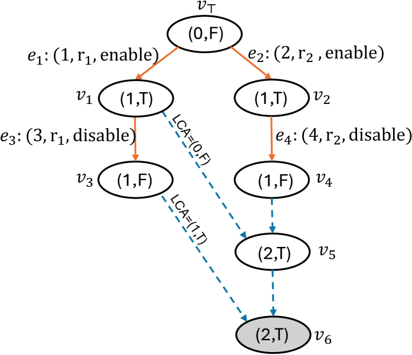

Designs and verifies state-based CRDTs and MRDTs in Lean using staged kernel-checked tactics, SMT fallback, AI-assisted proving, and Plausible counterexample generation.
Abstract
Designing correct replicated data types (RDTs) is challenging because replicas evolve independently and must be merged while preserving application intent. A promising approach is correct-by-construction development in a proof-oriented programming language such as F*, Dafny and Lean, where desired correctness guarantees are specified and checked as the RDTs are implemented. Recent work Neem proposes the use of replication-aware linearizability (RA linearizability) as the correctness condition for state-based CRDTs and mergeable replicated data types (MRDTs), with automation in the SMT-aided, proof-oriented programming language F*. However, SMT-centric workflows can be opaque when automation fails to discharge a verification condition (VC), and they enlarge the trusted computing base (TCB). We present Sal, a multi-modal workflow to design and verify state-based CRDTs and MRDTs in Lean. Sal combines (i) kernel-checkable automation with proof reconstruction, (ii) SMT-aided automation when needed, and (iii) AI-assisted interactive theorem proving for remaining proof obligations. When a verification condition is shown to be invalid, we leverage Lean's property-based testing to automatically generate and visualize counterexamples, helping developers debug incorrect specifications or implementations. We report on our experience verifying a suite of 13 CRDTs and MRDTs with Sal: 69% of verification conditions are discharged by kernel-verified automation without SMT, and counterexamples automatically expose subtle bugs such as the well-known enable-wins flag anomaly. The codebase for Sal is open-sourced, and is available at \href{https://github.com/fplaunchpad/sal}{https://github.com/fplaunchpad/sal}
Problem
Designing correct replicated data types (RDTs) is challenging because replicas evolve independently and must be merged while preserving intent. SMT-centric verification workflows can be opaque when automation fails and enlarge the trusted computing base.
Approach
Sal is a multi-modal verification workflow for state-based CRDTs and MRDTs in Lean. It combines kernel-checkable automation with proof reconstruction, SMT-aided automation when needed, and AI-assisted interactive theorem proving. When a verification condition is invalid, Lean's property-based testing generates and visualizes counterexamples to help debug specifications or implementations.

Figure 2. An enable-wins flag execution: both replicas see a disable at the end, yet merging produces \mathsf{(2,true)} at v_{6} , incorrectly reporting the flag as enabled.
Results
Across a suite of 13 CRDTs and MRDTs, 69% of verification conditions are discharged by kernel-verified automation without SMT. Counterexamples automatically expose subtle bugs such as the well-known enable-wins flag anomaly.